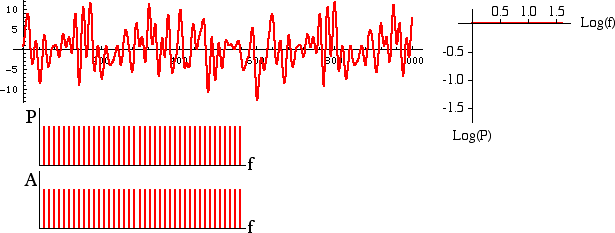

| The simplest types of noise are white noise: the value of the signal at any time is random, usually conforming to a normal distribution. |
| The present is completely independent of the past. |
| Here are a sample of white noise, its power spectrum, and plots of power and amplitude against frequency. |
|  |